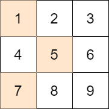
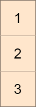
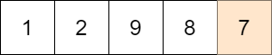

| Category | Difficulty | Likes | Dislikes |
|---|---|---|---|
| Algorithms | Medium | 1048 | 145 |
amazon
You are given an m x n integer matrix mat and an integer target.
Choose one integer from each row in the matrix such that the absolute difference between target and the sum of the chosen elements is minimized.
Return the minimum absolute difference.
The absolute difference between two numbers a and b is the absolute value of a - b.
Example 1:

Input: mat = [[1,2,3],[4,5,6],[7,8,9]], target = 13
Output: 0
Explanation: One possible choice is to:
- Choose 1 from the first row.
- Choose 5 from the second row.
- Choose 7 from the third row.
The sum of the chosen elements is 13, which equals the target, so the absolute difference is 0.Example 2:

Input: mat = [[1],[2],[3]], target = 100
Output: 94
Explanation: The best possible choice is to:
- Choose 1 from the first row.
- Choose 2 from the second row.
- Choose 3 from the third row.
The sum of the chosen elements is 6, and the absolute difference is 94.Example 3:

Input: mat = [[1,2,9,8,7]], target = 6
Output: 1
Explanation: The best choice is to choose 7 from the first row.
The absolute difference is 1.
Constraints:
m == mat.lengthn == mat[i].length1 <= m, n <= 701 <= mat[i][j] <= 701 <= target <= 800